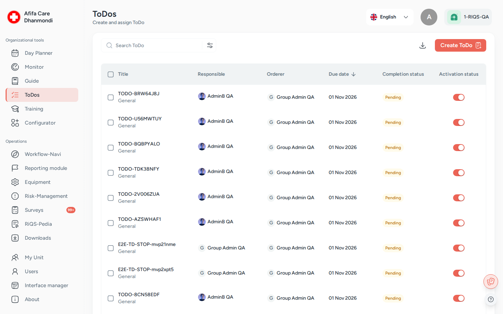

Open Items¶
In one sentence: Give someone a clear job with a due date (a "To-Do"), see when it is done, and keep their response, cost and files as proof. Menu: ToDos · Status: Live

ToDos: the list of To-Dos with responsible people, due date and status. Screens show test data.
What it is¶
Not every job needs a checklist or a score. Often you just need someone to do one thing by one date: order new gloves, read a new policy, fill in a form, carry out a measure from a risk assessment. Open Items is RIQS's To-Do list for this.
Think of it as a job card you hand to a colleague: what to do, by when, and who checks it. The colleague marks it Done (or Alternatively Done if they solved it another way), adds remarks, the actual cost and files, and submits. You see who has responded and who is still pending.
To-Dos are also created by other modules. A risk measure in Risk Management, an assigned Training, a report in Incident Reports or a control task in Monitoring can all produce To-Dos. They all land in this one list.
Which one do I use? Process Guide, Monitoring and Open Items are easy to mix up.
Use … when … Example Process Guide a job has several steps that people must work through "Morning opening: 8 steps" Monitoring you want to check regularly how well something is done, with a score from 0 to 100% "Fridge temperature checked: daily" ToDos one thing must be done by one date "Replace the broken lamp in room 2 by Friday" Rule of thumb: many steps → Process Guide. A score → Monitoring. A single job → Open Items.
Key terms¶
| Term | Meaning |
|---|---|
| To-Do (open item) | One job with a title, a due date and the people who must do it. |
| Type of To-Do | General (a plain job), Training (complete a training), Form (fill in a form), Template (fill in a document template). To-Dos from other modules have the type Risk-Management or Reporting module. |
| Assigned to (Responsible) | The people who must do the To-Do. |
| Assigned by (Orderer) | The person who created the To-Do. |
| Person in Charge | Optional person who checks the To-Do and can confirm an Alternatively Done response as done. |
| Completion Requirement | One User (the first response closes it) or All assigned users (set with Must be completed by all). |
| Done | "Task completed as specified." |
| Alternatively Done | "Task completed with deviations": the job is finished, but not exactly as asked. |
| Budget / Actual cost | Planned cost set by the orderer, and the real cost entered by the person who did it. |
| Active / Inactive | Whether the To-Do is still in the working list. |
Who uses it¶
| Role | What they typically do here |
|---|---|
| RiQS Administrator | Supports clients; can see, change and delete To-Dos. |
| Group Administrator | Creates and follows up To-Dos across the group. |
| Administrator | Creates and follows up To-Dos across the organisation. |
| Power User | Creates To-Dos for the unit, follows up responses, deactivates and deletes old ones. |
| Management | Creates To-Dos and follows them up; deactivates and deletes their own To-Dos. |
| Professional | Sees only the To-Dos assigned to them, and completes them. |
How it works¶
Create → Assigned (Pending) → Response submitted (Done / Alternatively Done) → Completed → Inactive (48 h later)
- Create. Someone creates a To-Do in two steps: Creation (unit, type, title, what to do) and Assignment (who, by when).
- Notify. The assigned people see it in their ToDos list and in their Cockpit (Workflow-Navi).
- Do. Each person opens the To-Do, does the job (for a form or template: fills it in; for a training: passes it), chooses Done or Alternatively Done, adds remarks, cost and files, and clicks Submit Response.
- Check. The orderer sees the responses and the people still pending. A Person in Charge can confirm an Alternatively Done response with Mark as done.
- Close. When the completion requirement is met, the To-Do is completed. 48 hours later it becomes Inactive automatically.
Statuses you will see
| Status | Meaning | What moves it on |
|---|---|---|
| Pending | Waiting for a response | A response is submitted |
| Library Form Submitted / Library Template Submitted | The attached form or template was filled in, but the person has not yet confirmed Done | The person confirms Done |
| Done | Completed as specified | — |
| Alternatively Done | Completed with deviations | Person in Charge clicks Mark as done |
| Overdue (shown in red) | Due date passed, not completed | Completing it, or deactivating it |
| Active / Inactive | Still in the working list or not | Status action, or automatic 48 hours after completion |
How to …¶
How to create a To-Do¶
Who can do this: RiQS Administrator, Group Administrator, Administrator, Power User, Management
- Open ToDos and click Create ToDo.
- Creation step: choose the unit (Select unit) and the Type of To-Do.
- Training: pick the training. Form: pick the form. Template: pick the template.
- Enter the To-Do Title, the category and sub-category, and what must be done. You can add a Budget, Attachments from RiQS-Pedia, and Remarks.
- Click Next.
- Assignment step: leave the default (all members of the unit's executing group) or pick specific people or a user group. Optionally set a Person in Charge.
- Tick Must be completed by all if every person must respond.
- Set the Due Date, or switch on Mark as a recurring To-Do and set the recurrence, Repeat every, and the end date. You can tick Avoid Weekends.
- Optional: switch on E-Mail if not completed and choose who gets the email.
- Click Save.
Result: "To-Do created successfully." The To-Do appears in the list and in the assignees' Cockpit.
How to complete a To-Do¶
Who can do this: RiQS Administrator, Group Administrator, Administrator; Power User, Management and Professional if assigned to the To-Do
- Open the To-Do from ToDos or from your Cockpit.
- Read the Information (description, orderer, budget, completion requirement, attachments).
- If it is a Form or Template To-Do, click Fill Out Form / Fill Out Template and complete it. If it is a Training To-Do, click Start Training and pass it.
- Under My Response, choose Done or Alternatively Done.
- Add Remarks, the Actual cost and files if needed.
- Click Submit Response. Use Next task / Previous task to move through your To-Dos.
Result: "Response saved." Your response appears under Responses. If you were the last person needed, the To-Do is completed.
How to check responses¶
Who can do this: RiQS Administrator, Group Administrator, Administrator, Power User, Management (Professionals: only on their own To-Dos)
- Open the To-Do.
- Open Responses: each answered person shows their choice, remarks, cost and files. The pending list shows who has not answered yet.
- If you are the Person in Charge and a response is Alternatively Done, open it and click Mark as done to accept it.
How to edit, deactivate or delete a To-Do¶
Who can do this: edit and deactivate: RiQS Administrator, Group Administrator, Administrator, Power User, Management. Delete: RiQS Administrator, Group Administrator, Administrator, Power User, Management, own To-Dos only (in audit-safe mode: RiQS Administrator only).
- Open the To-Do and open the actions menu, or tick rows in the list.
- Choose Edit To-do, Inactivate To-Do / Activate To-Do, or Delete.
- For a recurring To-Do, choose Selected To-Do (only this one) or Present and future To-Dos. Confirm.
Result: Inactive To-Dos leave the default list; use the Inactive filter to find them. Deleted To-Dos are gone.
How to find To-Dos and download a report¶
Who can do this: search and filter: every role. Download: RiQS Administrator, Group Administrator, Administrator, Power User, Management.
- Type in Search, or open Filters: type, category, sub-category, executing users, scheduling, module status (active/inactive) and progress status.
- Click a column to sort.
- Click Download, choose the date range and download the To-Do Report (Excel).
Rules to know¶
- Professionals see only their own To-Dos, and can only open To-Dos they are assigned to.
- One User vs. all: without Must be completed by all, the first response closes the To-Do for everyone; the other assignees can no longer answer.
- Training To-Dos can only be completed after the person has passed the training (reached the pass mark).
- Form and Template To-Dos: filling in the document is step one. The person must still confirm Done. The To-Do stays in the Cockpit until this is confirmed.
- To-Dos from Incident Reports cannot be edited in Open Items.
- Automatic inactive: a completed To-Do becomes inactive 48 hours after the last completion.
- Overdue: a To-Do past its due date and not completed is shown in red.
- E-Mail if not completed: when the To-Do becomes overdue, the chosen people get one email listing who has not completed it.
- Notification: assigned people are notified in their Cockpit.
- Recurring To-Dos create one To-Do per date. The list shows all To-Dos by default, not only the next 14 days.
- Audit-safe mode: only the RiQS Administrator can delete To-Dos.
- Planned: sending an Alternatively Done response back for rework, with a reason (see Open questions).
Who can do what¶
| Action | RiQS Admin | Group Admin | Admin | Power User | Management | Professional |
|---|---|---|---|---|---|---|
| See the To-Do list | ✅ | ✅ | ✅ | ✅ | ✅ | Own To-Dos only |
| Open To-Do details | ✅ | ✅ | ✅ | ✅ | ✅ | If assigned |
| Create a To-Do (any type) | ✅ | ✅ | ✅ | ✅ | ✅ | ❌ |
| Make it recurring / add email reminder | ✅ | ✅ | ✅ | ✅ | ✅ | ❌ |
| Edit a To-Do | ✅ | ✅ | ✅ | ✅ | ✅ | ❌ |
| Complete a To-Do | ✅ | ✅ | ✅ | If assigned | If assigned | If assigned |
| See responses | ✅ | ✅ | ✅ | ✅ | ✅ | Own To-Dos only |
| Confirm an "Alternatively Done" response | As Person in Charge | As Person in Charge | As Person in Charge | ✅ (or as Person in Charge) | ✅ (or as Person in Charge) | As Person in Charge |
| Activate / deactivate | ✅ | ✅ | ✅ | ✅ | ✅ | ❌ |
| Delete (regular, own To-Dos only) | ✅ | ✅ | ✅ | ✅ | ✅ | ❌ |
| Delete (audit-safe) | ✅ | ❌ | ❌ | ❌ | ❌ | ❌ |
| Create and download reports (own and all To-Dos) | ✅ | ✅ | ✅ | ✅ | ✅ | ❌ |
Connected modules¶
- Risk Management: measures for a risk are created as To-Dos; their status feeds Measures taken / pending.
- Training: assigning a training creates Training To-Dos for people who have not passed it yet.
- Incident Reports: actions on a report can be given out as To-Dos.
- Monitoring: Create open items turns a control task into a To-Do.
- RiQS-Pedia and Interactive documents: files, forms and templates attached to To-Dos.
- Cockpit (Workflow-Navi): shows each person's open To-Dos.
- Process Guide and Monitoring: the other two ways to give people work. See "Which one do I use?" above.
Open questions¶
- Management deleting To-Dos: the rights table says Management may delete their own To-Dos; the feature list says Management cannot delete. This page follows the rights table. Should the feature list be corrected?
- Group Administrator and recurring / email reminder: the rights table lets the Group Administrator create To-Dos; the feature list marks recurring and email reminder "No*" for the Group Administrator. What does the footnote mean? This page follows the rights table.
- Who completes To-Dos: the rights table says RiQS Administrators, Group Administrators and Administrators can answer To-Dos, and the other roles if assigned; the feature list says RiQS and Group Administrators cannot complete To-Dos ("No*"). This page follows the rights table. Should the feature list be corrected?
- Professionals and responses: the rights table lets Professionals see the answers on their own To-Dos; the feature list says Professionals cannot view other users' responses. Should a Professional see other assignees' responses on a shared To-Do?
- Rejecting an "Alternatively Done" response: the requirement says the checker can Cancel with a reason, which sends the To-Do back to the assignee for rework. Today Cancel only closes the panel. When will rework be built?
- Opening a To-Do from a report in the Cockpit opens the report, not the To-Do. Is that intended?
- Menu name: the menu shows ToDos in some places and To-Do's in others. Which name should be used everywhere?
Last reviewed: 2026-10-26